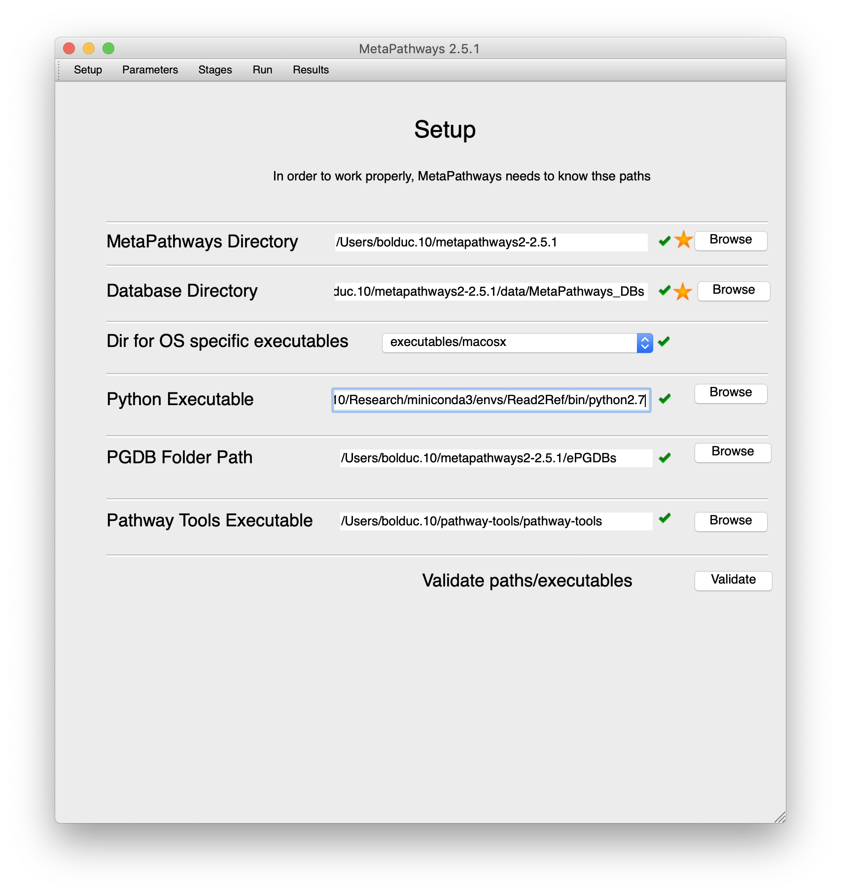
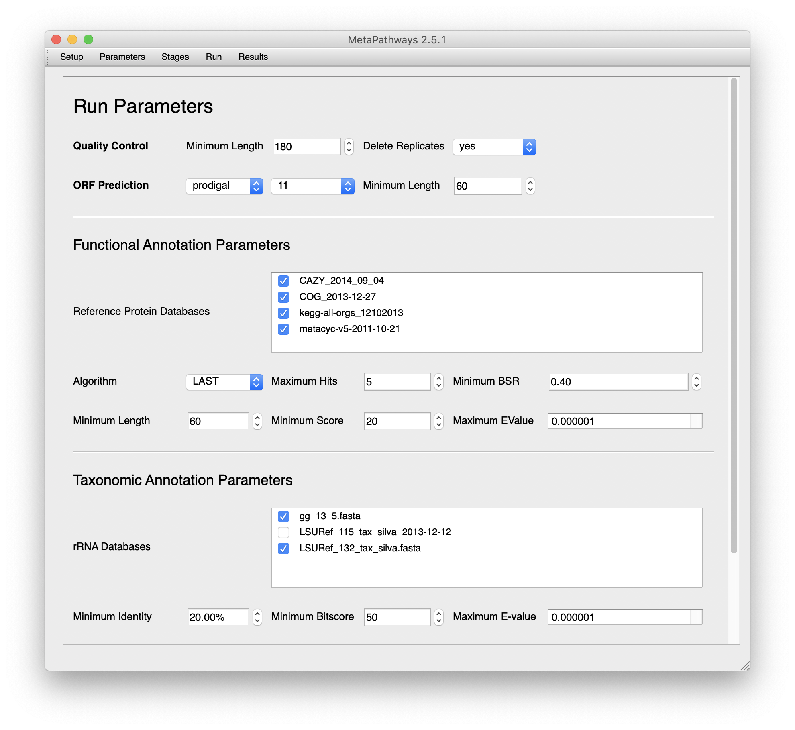
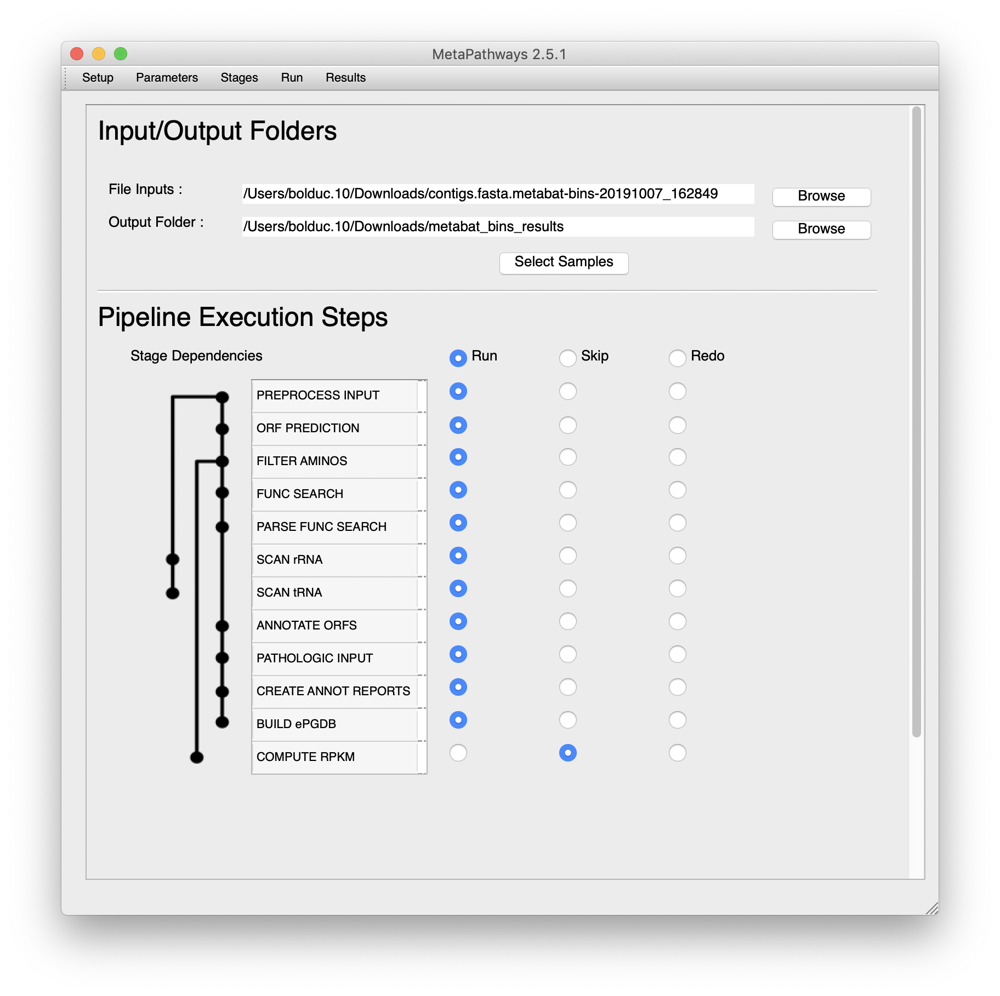
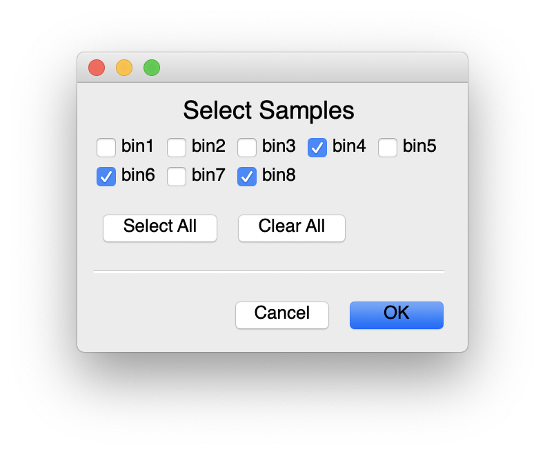
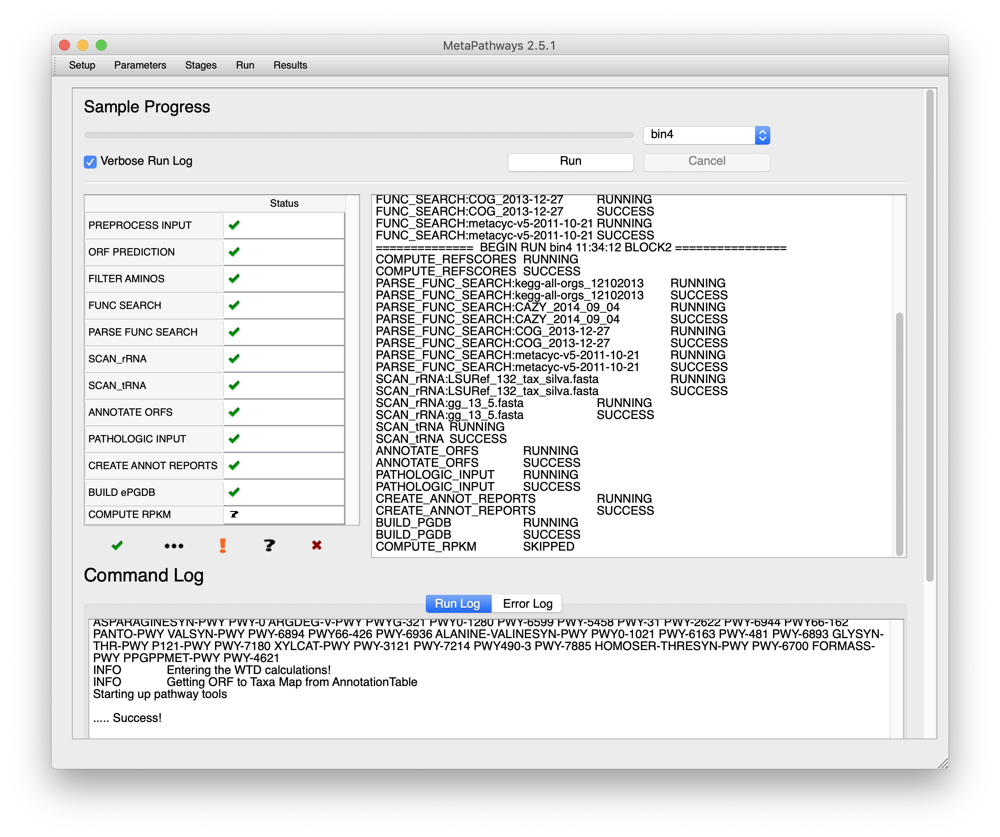
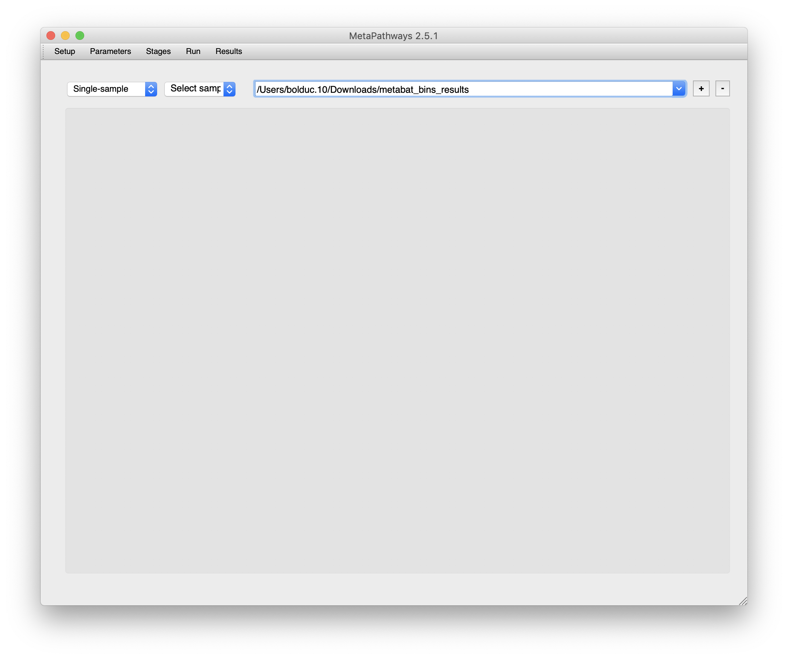
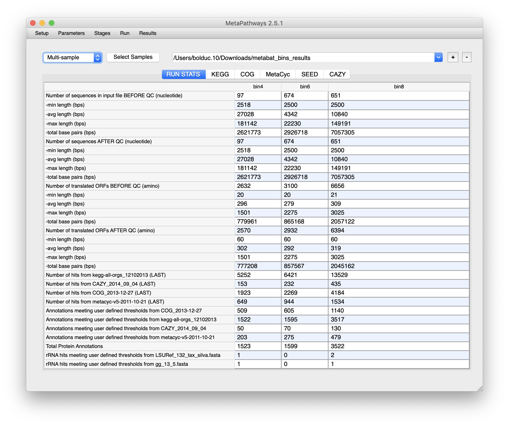
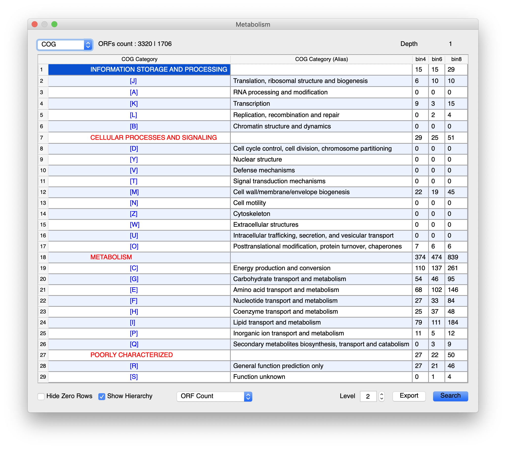
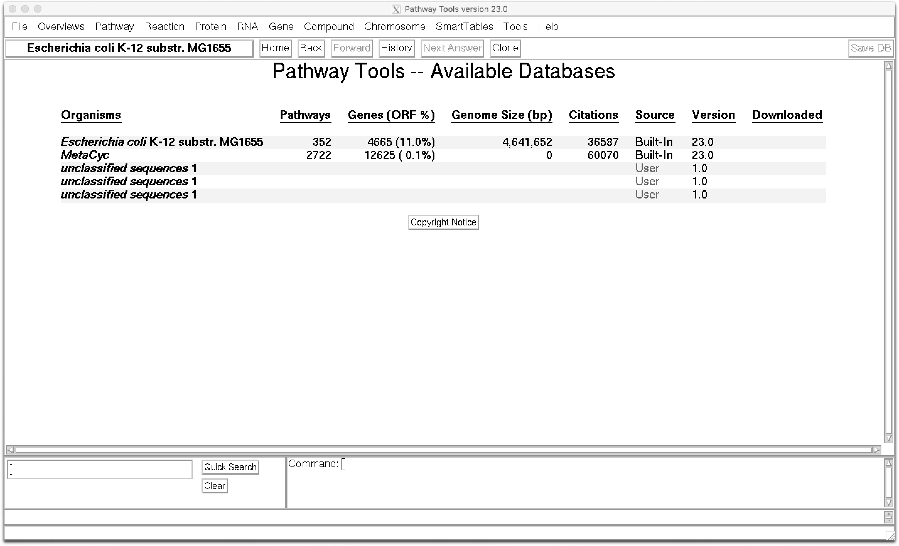

Pathways and Metabolisms of MAGs¶
This section will be a little different than the others, as we’ll be exploring the tools more than defining best-practices or commonly used methods. Use whichever tool works best for your data and project objectives.
We’ll continue working with the MAGs from our End-to-End Processing of a Microbial Metagenome, specifically the trimmomatic-cleaned, SPAdes-assembled, MetaBAT2-binned MAGs. You can/could choose any of the individual binning tools, or the aggregated bins (MetaWRAP, DAS_Tool) instead.
We’ll be using Metapathways2 and Pathway Tools. In the future, I might be adding a few other methods, especially a few that are likely more suitable for large-scale metagenomic data.
Before beginning¶
Unlike the other tools we’ve used, most of them we’re using to analyze pathways require an X Windows server. Put simply, it’s what lets you see graphics. Practically, that means is that you will need to install some software on your system to 1) run these tools on OSC or 2) on your local machine.
For Windows: Xming (remember to start this before using PuTTy)
For Mac: XQuartz
For Linux: You’ll need to install xorg and xauth, either through apt-get, yum, aptitude, etc.
Everytime you want to interact with these tools connecting to OSC, you’ll need to enable the X server connection so it can communicate with the one you’ve installed/enabled (above).
$ ssh -X username@pitzer.osc.edu
Alternatively, you can connect to OSC through onDemand and request a desktop: Log in –> “Interactive Apps” –> “Pitzer Desktop”
Installing MeaPathways2¶
MetaPathways2 handles most of the processing from bins (MAGs) to the pathways part of the pipeline. To identify pathways, it runs Pathway Tools and collects the results from that tool to integrate it into its [MetaPathways2] final results.
Complete instructions (far more detailed and… from the actual authors) are available at the metapathways2 documentation.
On Mac/Ubuntu/OSC¶
$ wget https://github.com/hallamlab/metapathways2/archive/v2.5.2.tar.gz
$ tar xf v2.5.2.tar.gz
$ cd metapathways2-2.5.2
# Download the database
$ wget https://www.dropbox.com/s/ye3kpve041e0r39/MetaPathways_DBs.zip
$ unzip MetaPathways_DBs.zip
# Download and “install” CAZy
$ cd MetaPathways_DBs/functional
$ wget https://www.dropbox.com/s/sewcecys04dk0ho/CAZY_2014_09_04.zip
$ unzip CAZY_2014_09_04.zip
If on a Mac, Navigate to the metapathways2-2.5.2 directory in Finder, find the MetaPathways2.dmg file, and copy-and-paste MetaPathways2 to Applications.
If on Ubuntu/OSC, unzip MetaPathways2.Ubuntu.zip. The unzipped directory will have a bash script for MetaPathways2
On Windows¶
For Windows, you’ll need a virtual machine and the disk image here. More instructions are found on the wiki.
Installing Pathway Tools¶
Pathway Tools requires a license to download the tool and requisite pathway databases. A free academic license exists for the tool as well as the “Tier 1” databases (MetaCyc and EcoCyc). You can (and should) fill out the license. The website will send out a download link to both the executable/installer (for Windows, Mac, Linux) and datafiles. The download will include installation instructions, but a quick setup is below:
Linux
$ chmod +x pathway-tools-23.0-linux-64-tier1-install
$ ./pathway-tools-23.0-linux-64-tier1-install
Mac
# Open pathway-tools-23.0-macosx-tier1-install.dmg
# Open pathway-tools-23.0-macosx-tier1-install
Windows
# Open pathway-tools-23.0-mswindows-tier1-Setup.ex
An X-Windows GUI will open up an installer. Follow prompts. Defaults will be fine.
For the rest of the guide, we’ll assume that the user has installed MetaPathways2 and Pathway Tools to their local machine that is a Unix-based system. Both can be run from the command line (but still require X), and both can be run from their respective GUIs.
Processing MAGs with MetaPathways2 and Pathway Tools¶
So if you remember our bins from processing our microbial metagenome with MetaBAT2 (trimmomatic+SPAdes):
--------------------------------------------------------------------------------------------------------------------------------------------------------------------
Bin Id Marker lineage # genomes # markers # marker sets 0 1 2 3 4 5+ Completeness Contamination Strain heterogeneity
--------------------------------------------------------------------------------------------------------------------------------------------------------------------
bin.8 k__Bacteria (UID203) 5449 104 58 2 51 51 0 0 0 97.41 43.09 9.80
bin.4 p__Actinobacteria (UID1454) 732 200 117 8 191 1 0 0 0 93.59 0.43 100.00
bin.6 k__Bacteria (UID3187) 2258 188 117 85 84 15 4 0 0 59.36 16.20 7.41
bin.2 k__Bacteria (UID203) 5449 104 58 65 34 5 0 0 0 51.90 6.38 20.00
bin.3 k__Bacteria (UID2982) 88 227 146 131 93 3 0 0 0 46.53 2.05 0.00
bin.1 k__Bacteria (UID203) 5449 104 58 79 23 2 0 0 0 32.04 2.07 0.00
bin.5 k__Bacteria (UID203) 5449 104 58 88 16 0 0 0 0 15.60 0.00 0.00
bin.7 k__Bacteria (UID203) 5449 104 58 94 10 0 0 0 0 15.52 0.00 0.00
--------------------------------------------------------------------------------------------------------------------------------------------------------------------
We’ll need to copy these bins from Week 7 over to Week 10.
$ cd /fs/project/PAS1573/week10_pathways/
$ cp -r ../week7_processing/bins/spades_trimmomatic_metabat2/contigs.fasta.metabat-bins-20191007_162849/ $PWD
# Rename files to make them suitable for MP2
$ rename bin. bin contigs.fasta.metabat-bins-20191007_162849/*
$ rename fa fasta contigs.fasta.metabat-bins-20191007_162849/*
For MetaPathways2 on OSC, we can use both the GUI and the command line. For this, we’ll use the command line. We can go over the GUI in the next step.
There are two required files (well, only 1), template_param and template_config, that are already in the Week 10 directory. I’ve already adjusted these files to work on OSC. We’re only looking at bins 4, 6 and 8, as they were the most complete (they’re specified using -s)
$ singularity exec /fs/project/PAS1573/week10_pathways/MetaPathways2-PAS1573.sif python /metapathways2-2.5.1/MetaPathways.py -i contigs.fasta.metabat-bins-20191007_162849/ -o metabat_bins_results/ -p template_param.txt -c template_config.txt -d 8 -s bin6 -s bin8 -s bin4
And that’s it! You’re done. MetaPathways2 took care of everything for you. Seriously. You can either open the GUI (below) or navigate through the output folders for results.
Alternatively, let’s use the GUI. To use the GUI, open up the MetaPathways2 app (on Mac) or run it via the bash script.
{kind=link}

Fill in the settings as appropriate for your system.
Once that’s done, we’ll move over to the parameters.
{kind=link}

Select the databases you’d like to use. You’ll notice that they only include databases that are in the MetaPathways_DBs folder that you uncompressed earlier. MetaPathways2 will handle database formatting.
Then to set up what processing steps to Run, Skip, or Rerun.
{kind=link}

For the purposes of processing our dataset, you can run everything except the RPKM. For that we’d need to move reads around, which we’ll “Skip” for now. If your job ever fails, you can always rerun a stage. Finally, set the input and output directories. We’ve updated the filenames to remove “.” and replaced “fa” with “fasta”. When MetaPathways2 searches through the input directory, it will find each fasta bin. Once that’s done, you can select which samples to process.
{kind=link}

Then, move over to the run tab and select “Run”. On the left side of the window you’ll see each stage as its processed, on the right, a text log (saved per bin in the results directory), and the bottom, the commands executed.
{kind=link}

Once done, select the results tab and click on the “+” to add the location of the output directory. Once done, you can select which samples to use.
{kind=link}

This will bring up a “RUN STATS” summary, along with a set of tabs corresponding to all the databases compared against. We won’t go into the details for each tab - you’ll need to explore on your own - but each database will have its own set of pathways and/or groups matched.
{kind=link}

One example…
{kind=link}

Pathway Tools¶
With an appropriately installed Pathway Tools and a MetaPathways2 installation that is directed towards the Pathway Tools executable (handled in the setup tab), Pathway Tools should be run by MetaPathways2. You’ll see a Pathway Tools window open up, don’t close it.
If there is a problem during MetaPathways2 running Pathway Tools, you can do so:
# Change to the results directory of MetaPathways2
$ cd /fs/project/PAS1573/week10_pathways/metabat_bins_results
# On OSC
$ week10_pathways/pathway-tools/pathway-tools -patho ptools/ -no-taxonomic-pruning -no-web-cel-overview
# OR on Mac/Ubuntu
$ ~/pathway-tools/pathway-tools -patho ptools/ -no-taxonomic-pruning -no-web-cel-overview
To run Pathway Tools separately, it’s just the above command without parameters.
$ pathway-tools/pathway-tools
And when Pathway Tools open, you’ll see the Available Databases:
{kind=link}

From here you can navigate through all the menus. But at least you’ll notice that there’s 3 unclassified sequences. It’s not a coincidence that we selected our 3 most complete bins…
We’ll let you explore it from here!
DRAM¶
Another way of looking at metabolic pathways is DRAM. Installation can take a while, but there’s a version installed in the week10_pathways directory.
For this we’ll use the same dataset as above:
$ cd /fs/project/PAS1573/week10_pathways/
$ cp -r ../week7_processing/bins/spades_trimmomatic_metabat2/contigs.fasta.metabat-bins-20191007_162849/ $PWD
$ rename bin. bin contigs.fasta.metabat-bins-20191007_162849/*
$ rename fa fasta contigs.fasta.metabat-bins-20191007_162849/*
(If you’ve already completed the MetaPathways2 portion you do not need to re-do this step!)
$ export PATH=/fs/project/PAS1573/week10_pathways/DRAM/bin/:$PATH
$ DRAM.py annotate -i 'contigs.fasta.metabat-bins-20191007_162849/*.fasta' -o $PWD/dram_annotations --skip_trnascan --skip_uniref --gtdb_taxonomy gtdbtk_output/gtdbtk.bac120.summary.tsv --threads 40 --verbose
$ DRAM.py summarize_genomes -i $PWD/dram_annotations/annotations.tsv -o $PWD/dram_results --rrna_path $PWD/dram_annotations/rrnas.tsv